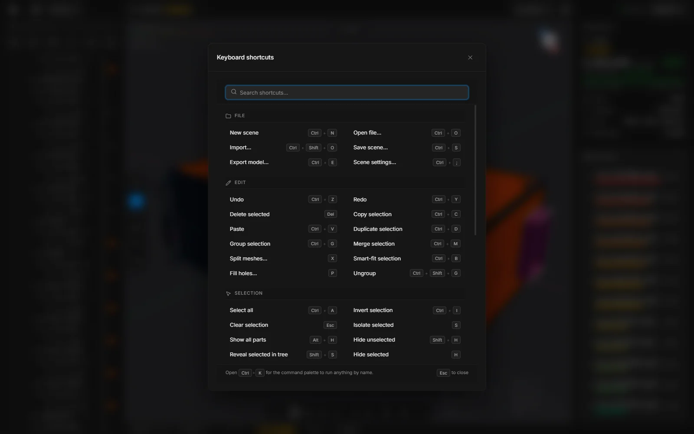

Keyboard shortcuts
Every keyboard shortcut and mouse action in MeshOptimiser v0.15.0, grouped by what it does.
On macOS, use ⌘ wherever this page says Ctrl.
Inside the app, press ? for the same list with a search field. Shortcuts with a single key do nothing while you are typing in a field, or while a window is open in front.


File
- CtrlN
- New scene, in a new tab
- CtrlO
- Open a file
- CtrlShiftO
- Import a file into the open scene
- CtrlS
- Save the scene
- CtrlE
- Export
- CtrlShiftF4
- Close all scenes. It asks once about the ones with unsaved changes.
- Ctrl;
- Scene settings
Edit
- CtrlZ
- Undo
- CtrlY
- Redo
- CtrlShiftZ
- Redo
- CtrlC
- Copy the selected parts
- CtrlV
- Paste
- CtrlD
- Duplicate the selection
- Del
- Delete the selection. Backspace does the same.
- CtrlG
- Group
- CtrlShiftG
- Ungroup
- CtrlM
- Merge the selected parts into one
- F2
- Batch rename
Tools
- X
- Split
- P
- Fill holes
- CtrlB
- Smart fit
- M
- Measure
- Enter
- Run the open command card
- Esc
- Put the open command card away. A second press clears the selection.
Smart optimise, Decimate, Fit to budget, Select hidden parts, Fasteners, Stacked copies and Align to floor have no key of their own. Find them on the toolbar, in the … list or with the search.
Selection
- CtrlA
- Select all
- CtrlI
- Invert the selection
- Esc
- Select nothing
- ShiftS
- Find the selected part in the tree
Visibility
- H
- Hide the selection
- ShiftH
- Hide the rest
- AltH
- Show all
- S
- Isolate the selection, and back
View
- F
- Frame the selection, or the whole model
- 1
- Solid
- 2
- Wireframe
- 3
- X-ray
- 4
- Heatmap
- 5
- Clay, and back to solid
- 6
- CAD view, and back to solid
- Ctrl1
- Camera view (perspective)
- Ctrl2
- Top view
- Ctrl3
- Front view
- Ctrl4
- Side view
- G
- Show or hide the floor grid
Move, rotate, scale
- E
- Move
- R
- Rotate
- T
- Scale
- D
- Dynamic place: drag the selected part over other surfaces. Press it again to leave.
- Q
- Hide the gizmo
- Shift
- Hold while dragging the gizmo to snap
- ShiftScroll
- While snapping and dragging: a coarser or a finer step
Panels and windows
- CtrlK
- Search commands, parts and the library
- W
- Quick wand: hold it over the viewport, flick toward a command, let go. A quick tap leaves the ring open.
- ShiftL
- Library drawer
- ShiftM
- Materials drawer
- `
- Console
- Ctrl,
- Settings
- F1
- Help window
- ?
- Keyboard shortcuts
- CtrlF
- In Settings: jump to the search field
- CtrlEnter
- In Batch rename: apply
- Esc
- Close the open window or menu
In the help window
- /
- Jump to the search field
- Enter
- In the search field: open the first result
- Esc
- Clear the search. Press it again to close the window.
Mouse, in the viewport
- Click
- Select a part
- ShiftClick
- Add to the selection
- CtrlClick
- Add to or remove from the selection
- CtrlDrag
- Box select
- CtrlShiftDrag
- Box select, adding to the selection
- Drag
- Orbit
- Middle drag
- Pan
- Right drag
- Pan
- Scroll
- Zoom, toward the cursor
- AltRight drag
- Zoom smoothly
- Right-click
- Menu for the part or the view
Mouse, elsewhere
- Double-click
- On a name in the tree or on a tab: rename
- Click
- In the tree: select a row
- ShiftClick
- In the tree: select a range of rows. In Heavy parts: tick a run of rows.
- CtrlClick
- In the tree: add a row to the selection or take it off
- Drag
- In the tree: move rows into a group or into another place
- Right-click
- On a tab: duplicate, close all, close others, open
- Middle click
- On a tab: close it
- Esc
- While dragging a tab: put it back
- Shift
- While dragging a number: ten times faster
- Alt
- While dragging a number: ten times finer
- Click
- On a number: type a value
On the start screen
- ← → ↑ ↓
- Walk the cards of the recent files. Up and down move by a row.
- Enter
- In the search field of the recent files: open the first match